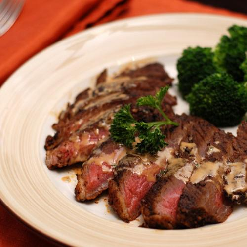

T01 · 不爱吃的香草挪到盘边
Movecomponentwise

P01
destination
Complex-Edit · 67 · 500 × 500
Move the herb garnish I avoid out of my way when I eat steak.
把我不吃的那种香草配料挪到吃牛排时不碍事的位置。
Move the parsley garnish off the steak onto the plate rim near the broccoli.
把牛排上的欧芹挪到西兰花旁边的盘沿。
匹配：烧烤爱好提供轻量匹配；不吃欧芹是按任务补充，不从职业或地区推断。
核查：Parsley, steak and broccoli are all visible in the unedited original.
参数绑定 · 2 个参数
| 操作 / 参数 | 个性化表达 | 明确值 / Profile 依据 |
|---|---|---|
| P01 Move Entity / target_entity | the herb garnish I avoid General Entity | {
"category": "HerbGarnish",
"herb_type": "parsley"
}A_GARNISH_AVOID |
| P02 Move Placement / destination | out of my way when I eat steak | {
"relation": "on_rim_near",
"anchor": "broccoli",
"support": "plate rim clear of the steak"
}S_GARNISH_ASIDE |
来源、改写和保留要求
Reposition the parsley on the steak to the plate's rim, near the broccoli.
保留欧芹从牛排移到西兰花旁盘边；不加酒、不改桌布或酱汁。
{
"source": {
"benchmark": "Complex-Edit",
"dataset": "UCSC-VLAA/Complex-Edit",
"revision": "b0b8a81d740ae413d52572281a23dc975c4b4b91",
"split": "test_real",
"sample_id": "67",
"image_field": "image",
"asset_access": "Hugging Face dataset viewer cached image; stored bytes retained without editing",
"url": "https://huggingface.co/datasets/UCSC-VLAA/Complex-Edit/tree/b0b8a81d740ae413d52572281a23dc975c4b4b91",
"original_instruction": "Reposition the parsley on the steak to the plate's rim, near the broccoli.",
"native_label": [
"Move an Object"
],
"selected_sequence_indices_zero_based": [
4
],
"original_sequence": [
{
"name": "Change Background",
"instruction": "Replace the orange cloth background with a white marble table surface."
},
{
"name": "Add Special Effects",
"instruction": "Add soft steam effects rising above the steak."
},
{
"name": "Change Color",
"instruction": "Change the steak's sauce color slightly to a deeper red."
},
{
"name": "Add an Object",
"instruction": "Add a glass of red wine to the upper left corner of the image."
},
{
"name": "Move an Object",
"instruction": "Reposition the parsley on the steak to the plate's rim, near the broccoli."
},
{
"name": "Apply Filter/Weather",
"instruction": "Apply a warm filter to the image."
},
{
"name": "Zoom In/Out",
"instruction": "Zoom out slightly to show more of the full plate and surroundings."
},
{
"name": "Add Text",
"instruction": "Add the text 'Bon Appétit' in elegant script to the bottom-left corner of the image."
}
],
"preceding_steps_applied": false,
"dependency_review": "Selected objects and spatial anchors are visible in the original source. No preceding sequence steps are applied or required; task-specific visual review records exclusions."
},
"preservation_constraints": [
"Keep unrelated scene content and identity unchanged."
],
"visual_review": {
"status": "source_visually_checked_draft",
"check": "Parsley, steak and broccoli are all visible in the unedited original."
}
}